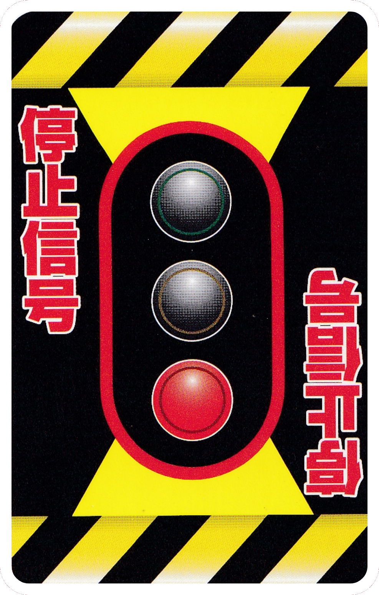
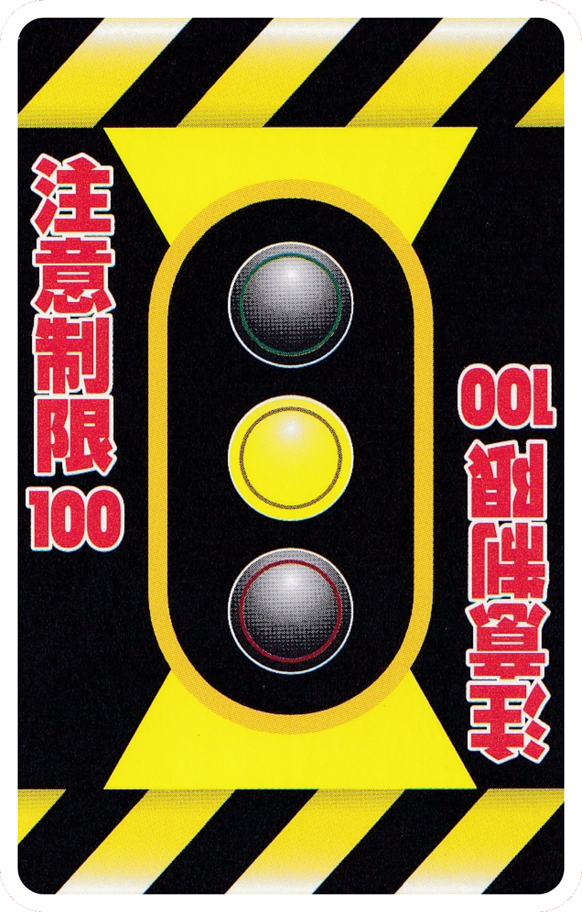

Signal Cards
When these cards are played, the affected route is stopped or restricted. The affected player can remove these
by playing a GO signal card on their turn.

●「STOP Signal Card」
No cards can be played on this line until this card is removed using a GO signal.
※ Turn order does not change.

●「CAUTION Limit 50 Signal Card」
●「CAUTION Limit 100 Signal Card」
Until this card is removed with a GO signal, the line can only be progressed a maximum of 50 or 100
distance. If a Limit 100 card is played you may also use 50 distance cards.
※ Turn order does not change.